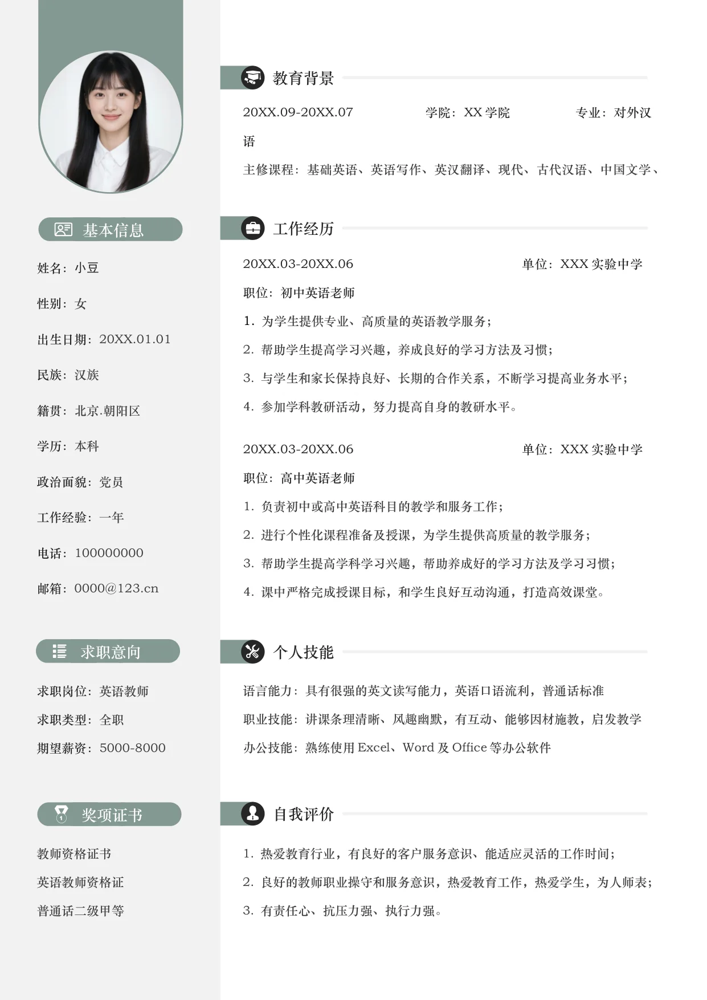

工作经历
个人技能
教育背景
自我评价
求职意向
语言能力：具有很强的英文读写能力，英语口语流利，普通话标准
职业技能：讲课条理清晰、风趣幽默，有互动、能够因材施教，启发教学
办公技能：熟练使用Excel、Word 及Office 等办公软件
1. 热爱教育行业，有良好的客户服务意识、能适应灵活的工作时间；
2. 良好的教师职业操守和服务意识，热爱教育工作，热爱学生，为人师表；
3. 有责任心、抗压力强、执行力强。
20XX.09-20XX.07 学院：XX 学院 专业：对外汉
语
主修课程：基础英语、英语写作、英汉翻译、现代、古代汉语、中国文学、
姓名：
小豆
性别：
女
出生日期：
20XX.01.01
民族：
汉族
籍贯：
北京.朝阳区
学历：
本科
政治面貌：
党员
工作经验：
一年
电话：
100000000
邮箱：
0000@123.cn
求职岗位：
英语教师
求职类型：
全职
期望薪资：
5000-8000
教师资格证书
英语教师资格证
普通话二级甲等
20XX.03-20XX.06 单位：XXX 实验中学
职位：初中英语老师
1.
为学生提供专业、高质量的英语教学服务；
2. 帮助学生提高学习兴趣，养成良好的学习方法及习惯；
3. 与学生和家长保持良好、长期的合作关系，不断学习提高业务水平；
4. 参加学科教研活动，努力提高自身的教研水平。
20XX.03-20XX.06 单位：XXX 实验中学
职位：高中英语老师
1. 负责初中或高中英语科目的教学和服务工作；
2. 进行个性化课程准备及授课，为学生提供高质量的教学服务；
3. 帮助学生提高学科学习兴趣，帮助养成好的学习方法及学习习惯；
4. 课中严格完成授课目标，和学生良好互动沟通，打造高效课堂。
基本信息
奖项证书